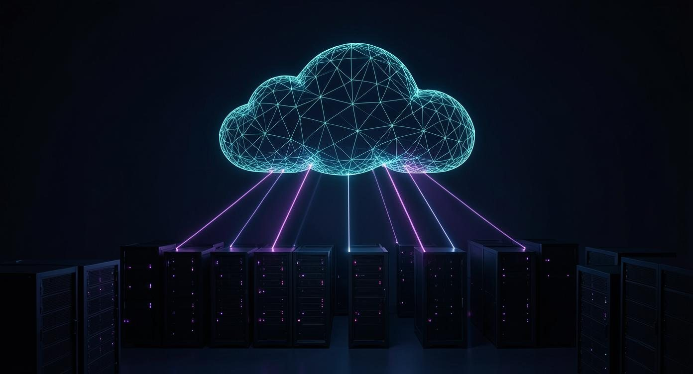
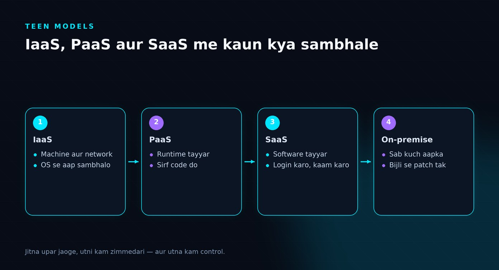
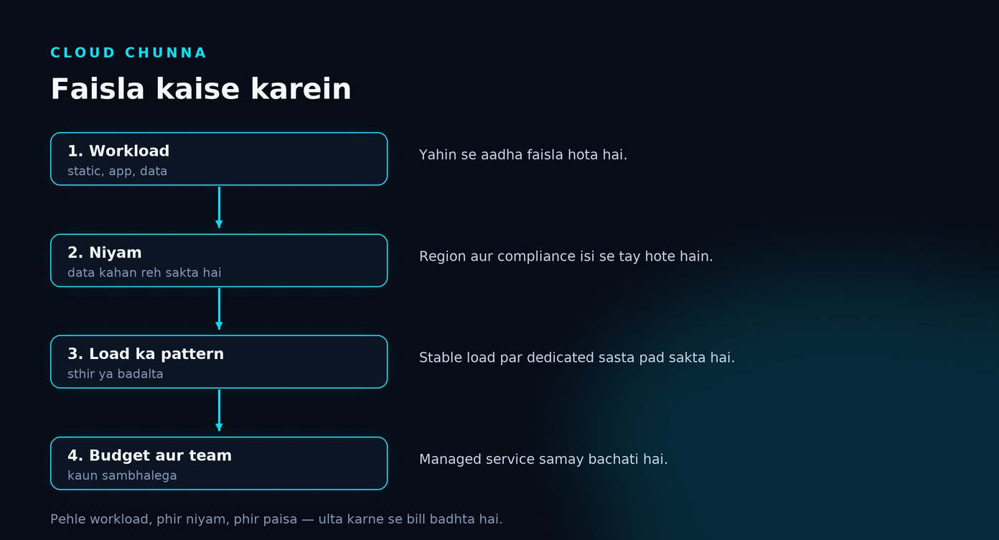

Cloud Computing Kya Hai? IaaS, PaaS aur SaaS ka Farq

"Cloud" शब्द सुनकर ज़्यादातर लोग आसमान में तैरते servers की तस्वीर सोचते हैं। असल में cloud किसी जगह का नाम नहीं, बल्कि एक तरीका है — किसी और के data center में पड़ी machines को internet से किराए पर लेना। आप जब AWS, Azure या Google Cloud पर एक server बनाते हैं, तो वह असल में किसी हॉल में रखी मशीन का एक हिस्सा होता है, जिस पर आपका पैसा और आपका control होता है।
इस guide में मैं cloud को शुरुआत से खोलूँगा — इसके तीन basic मॉडल (IaaS, PaaS, SaaS), public, private और hybrid cloud का फर्क, खर्च का असली हिसाब, भारत में data residency का सवाल, और वे हालात जिनमें on-premise server cloud से बेहतर निकलता है। साथ में छह गलतियाँ भी, जिनकी वजह से cloud का बिल अचानक कई गुना हो जाता है।
छोटा जवाब: Cloud computing का मतलब है computing resources — server, storage, database, network — को internet से on-demand लेना, महीने या घंटे के हिसाब से पैसा देना, और ज़रूरत के हिसाब से बढ़ाना-घटाना। इसमें IaaS में आपको कच्ची machine मिलती है, PaaS में चलाने की जगह, और SaaS में पूरा तैयार software.
Cloud ki teen buniyadi baatein
Cloud को समझने के लिए तीन चीज़ें काफ़ी हैं। पहली — on-demand: जब चाहिए तब मिलता है, किसी को email लिखकर हफ़्ता इंतज़ार नहीं करना पड़ता। दूसरी — elastic: traffic बढ़े तो resources बढ़ जाते हैं, कम हो तो घट जाते हैं। तीसरी — pay as you go: जितना इस्तेमाल, उतना बिल — कोई बड़ा upfront खर्च नहीं।
इसके पीछे जो तकनीक है उसे virtualization कहते हैं। एक बड़ी मशीन पर कई virtual machines चलाई जाती हैं, हर एक अपना OS, अपनी disk और अपना network रखती है। इसीलिए एक ही physical server पर हज़ारों customers अलग-अलग काम कर सकते हैं और एक-दूसरे को दिखते नहीं।

IaaS: kacchi machine, poora control
IaaS (Infrastructure as a Service) में आपको virtual machine, storage और network मिलता है — बस। OS install करना, software चलाना, patching करना, सब आपका काम। AWS EC2, Google Compute Engine और Azure Virtual Machines इसी श्रेणी में आते हैं।
यह उनके लिए सही है जिन्हें control चाहिए — जैसे कोई खास kernel version, custom firewall, या ऐसा software जो managed platform पर नहीं चलता। इसका नुकसान यह है कि ज़िम्मेदारी भी पूरी आपकी है; security patch नहीं लगाया तो server किसी और का हो जाएगा।
एक practical बात — IaaS पर आप जो machine चुनते हैं, उसका size और type बहुत मायने रखता है। ज़्यादा CPU वाला instance database के लिए ठीक नहीं, और ज़्यादा RAM वाला web server महंगा पड़ेगा। शुरुआत में छोटा instance लें और नापकर बढ़ाएँ।
PaaS: chalane ki jagah, management free
PaaS (Platform as a Service) में आपको OS, runtime और scaling की चिंता नहीं करनी। आप code या container देते हैं, platform उसे चलाता है, updates लगाता है और load के हिसाब से instances बढ़ाता है। Heroku, Google App Engine, Azure App Service और Render इसी तरह काम करते हैं।
PaaS का सबसे बड़ा फायदा समय है। एक छोटी team जब product बना रही हो, तो उसका समय server updates में नहीं, feature में लगना चाहिए। PaaS वही देता है — deploy करो और भूल जाओ, बाकी platform सँभालेगा।
नुकसान यह है कि आप platform की सीमाओं में बंधे होते हैं। कोई खास background process, custom port या unusual dependency चाहिए तो अड़चन आती है। इसीलिए बड़े होने पर कई teams PaaS से container platform (Kubernetes) पर शिफ़्ट होती हैं।
SaaS: tayaar software
SaaS (Software as a Service) में आपको software ही मिलता है — install कुछ नहीं करना। Gmail, Google Workspace, Slack, Notion, Zoom और Zoho सब SaaS हैं। आप browser खोलते हैं, login करते हैं, और काम शुरू।
यहां सवाल सिर्फ़ कीमत और feature का होता है, infrastructure का नहीं। पर दो बातें देखनी चाहिए: data export — क्या आपका data बाहर निकाला जा सकता है; और compliance — क्या वह service आपके data को उस देश में रखती है जहाँ कानून चाहता है।
कई लोग यह नहीं समझते कि वे रोज़ SaaS इस्तेमाल करते हैं। जब कोई पूछता है "cloud कहाँ इस्तेमाल करते हो?", तो जवाब अक्सर "कहीं नहीं" होता है — जबकि Gmail से लेकर WhatsApp Business तक सब SaaS है।
| मॉडल | आपको मिलता है | आप सँभालते हैं | उदाहरण |
|---|---|---|---|
| On-premise | मशीन, बिजली, जगह | सब कुछ | अपना data center |
| IaaS | VM, storage, network | OS से ऊपर सब | AWS EC2 |
| PaaS | Runtime + deploy | सिर्फ़ code और data | App Service, Render |
| SaaS | तैयार software | सिर्फ़ अपना data | Gmail, Slack |
Public, private aur hybrid
Public cloud वह है जिसे कोई provider चलाता है और हज़ारों customers उसी infrastructure का हिस्सा लेते हैं — AWS, Azure, Google Cloud. Private cloud किसी एक संस्था के लिए बनाया गया environment है, चाहे वह उनके अपने data center में हो या किराए की dedicated machines पर। Hybrid में दोनों मिले होते हैं — जैसे customer data अपने data center में और analytics public cloud में।
ज़्यादातर छोटी और मझोली कंपनियों के लिए public cloud सही है। Private cloud की ज़रूरत तब पड़ती है जब नियम (जैसे बैंकिंग, health data) या बहुत खास performance माँगें हों। Hybrid तब आता है जब कुछ चीज़ें पुरानी machines पर चल रही हों और उन्हें एक साथ बदलना मुमकिन न हो।
India me cloud aur data residency
भारत में बड़े providers के regions मुंबई, हैदराबाद और पुणे जैसी जगहों पर हैं। Region चुनने का मतलब है कि आपका data उसी भौगोलिक क्षेत्र में रहेगा। यह latency के लिए अच्छा है — भारतीय users को 20–40 मिलीसेकंड — और कई नियमों के लिए भी ज़रूरी।
लेकिन region सिर्फ़ data center का पता नहीं होता। हर region में कुछ services देर से आती हैं, कीमतें थोड़ी अलग होती हैं, और availability zones की संख्या भी अलग होती है। इसलिए production में जाने से पहले देखें कि जो services आपको चाहिए, वे उस region में उपलब्ध हैं या नहीं।
Kharch ka asli hisaab
Cloud सस्ता लगता है क्योंकि शुरुआत में कोई बड़ा खर्च नहीं। पर बिल चार जगहों से बढ़ता है: compute (चालू machines), storage (रखा हुआ data), data transfer (बाहर जाने वाला data) और managed services (database, queue, logging). इनमें सबसे ज़्यादा चौंकाने वाला होता है data transfer — क्योंकि इसे कोई नहीं देखता।
एक उदाहरण से समझें। छोटी site जिस पर महीने के 50,000 visits हैं और औसत page 1 MB का है, वह लगभग 50 GB data बाहर भेजेगी। अगर hosting $0.09 प्रति GB लेती है, तो यह $4.5 हुआ — ठीक है। पर अगर वही site हर visit पर 10 MB video भेजे, तो बिल $450 पहुँच जाएगा। इसीलिए CDN और compression पहले दिन से ज़रूरी हैं।
Managed services kab lena chahiye
Cloud में हर चीज़ खुद बनाना ज़रूरी नहीं। Database, queue, cache और search जैसी चीज़ों के लिए managed services मिलती हैं — जहाँ provider backup, patching और availability सँभालता है। सवाल यह है कि कब उन्हें लें।
एक सीधा नियम — जो चीज़ आपके product का मुख्य काम नहीं है, उसे managed लें। अगर आप ई-कॉमर्स बना रहे हैं, तो database का engine ठीक करने में समय लगाना गलत है; वह काम किसी और को दें और अपना समय checkout पर लगाएँ। दूसरी तरफ़, अगर database ही आपका product है, तो उसे खुद चलाना समझ में आता है।
Managed service महंगी लगती है, पर तुलना सही तरीके से करें — उसमें वह समय भी जोड़ें जो आपकी team patching, backup और 3 बजे के alerts में लगाती। अक्सर वह समय, न कि सर्वर का बिल, असली खर्च होता है।

बिल काबू में रखने के चार तरीके हैं। पहला — हर resource पर tag लगाएँ, ताकि पता चले कौन सा project कितना खर्च कर रहा है। दूसरा — budget alert सेट करें, 50% और 90% पर। तीसरा — जो machines बंद रहती हैं (dev/test), उन्हें समय पर बंद करने का schedule बनाएँ। चौथा — हर महीने बिल पढ़ें, सिर्फ़ भुगतान न करें।
Kab cloud nahi lena chahiye
Cloud हर जगह सही नहीं है। तीन हालात ऐसे हैं जहाँ on-premise या किराए का dedicated server बेहतर निकलता है। पहला — जब load बहुत स्थिर हो; 24×7 एक जैसा load चलाने पर किराए की machine अक्सर सस्ती पड़ती है। दूसरा — जब data किसी कारण बाहर नहीं जा सकता (नियम, गोपनीयता या बहुत बड़ा size)। तीसरा — जब team के पास cloud सीखने का समय न हो और मौजूदा setup ठीक चल रहा हो।
यह भी याद रखें कि cloud "सस्ता" अपने आप नहीं होता। वह सस्ता तभी है जब आप resources को सही size में रखें और बेकार चीज़ें बंद करें। बिना देखभाल के cloud on-premise से महंगा पड़ सकता है — क्योंकि on-premise में आप एक बार खरीदते हैं, और cloud में हर घंटे का हिसाब चलता है।
Chhah common galtiyan
1. Region बाद में सोचना। Data जहाँ है, वहीं latency और नियम तय होते हैं। शुरुआत में ही तय करें।
2. सब कुछ एक ही machine पर। Database और app एक ही server पर रखने से failure का असर दुगना होता है।
3. Root account रोज़ इस्तेमाल करना। हर काम के लिए अलग user और permissions बनाएँ।
4. Backup न लेना। Cloud में disk खराब होना दुर्लभ है, पर गलती से delete होना आम है।
5. बिना नापे बड़ा instance लेना। "बाद में देखेंगे" वाला बड़ा server महीनों का बिल बढ़ा देता है।
6. Managed service को जादू समझना। Database managed है, पर उसका schema, index और query आपकी ज़िम्मेदारी है।
Mera anubhav
मेरा पहला cloud बिल $0.40 का था, और मुझे लगा कि cloud मुफ़्त जैसा है। तीन महीने बाद एक project का बिल अचानक कई गुना हो गया। जाँच करने पर पता चला कि दो चीज़ें चल रही थीं — एक बड़ा database जिसका इस्तेमाल किसी ने नहीं किया, और एक logging setup जो हर request का पूरा body जमा कर रहा था।
उसके बाद मैंने तीन आदतें बनाईं। पहली — हर resource पर tag, इसलिए पता रहता है कि खर्च किसका है। दूसरी — dev और staging machines के लिए शाम 8 बजे बंद होने का schedule। तीसरी — महीने के पहले दिन बिल का एक page पढ़ना, सिर्फ़ total नहीं, बल्कि top 5 services.
तीसरी सीख — छोटी site के लिए cloud की ज़रूरत ही नहीं होती। यह site जिस पर आप पढ़ रहे हैं, static files हैं और मुफ़्त hosting पर चलती है। जब तक database या server-side code की ज़रूरत न हो, cloud का बिल टाला जा सकता है। पैसा वहाँ लगाएँ जहाँ असल में ज़रूरत है।
नतीजा
Cloud computing resources को किराए पर लेने का तरीका है — on-demand, elastic और उपयोग के हिसाब से बिल। IaaS में machine, PaaS में platform और SaaS में तैयार software मिलता है। Public cloud ज़्यादातर कामों के लिए सही है, private और hybrid खास ज़रूरतों के लिए। खर्च चार जगहों से बढ़ता है — compute, storage, data transfer और managed services — और उसे tags, alerts और schedules से काबू में रखा जा सकता है।
आगे पढ़ें: DevOps क्या है — जहाँ culture और practices हैं, और serverless — जहाँ बिना server सँभाले code चलाने का तरीका है। अगर hosting का basic समझना है तो web hosting guide पढ़ें।
अक्सर पूछे जाने वाले सवाल
क्या cloud में data सुरक्षित रहता है?
Provider physical security और infrastructure सँभालता है; access, encryption और permissions आपकी ज़िम्मेदारी हैं।
Cloud सीखने के लिए पैसा लगेगा?
ज़्यादातर providers free tier देते हैं। छोटे experiments के लिए वह काफ़ी है, बस limit और alert सेट रखें।
क्या cloud on-premise से सस्ता है?
हमेशा नहीं। स्थिर और भारी load पर on-premise या dedicated सस्ता पड़ सकता है; बदलते load पर cloud आगे है।
SaaS और cloud एक ही है?
SaaS cloud का एक हिस्सा है। Cloud बड़ा शब्द है जिसमें IaaS, PaaS और SaaS तीनों आते हैं।
क्या छोटी कंपनी को cloud चाहिए?
अगर site static है तो शायद नहीं। जब database, users या बदलता traffic आए, तब cloud समझदारी बनती है।